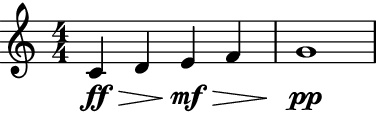
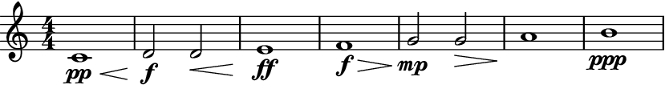
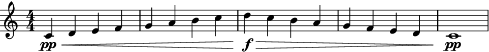

merge_hairpins¶
- auxjad.mutate.merge_hairpins(selection: abjad.select.Selection) → None[source]¶
Mutates an input
abjad.Selectionin place and has no return value; this function merges all consecutive hairpins that share a same trend.- Basic usage:
Merging crescendo hairpins:
>>> staff = abjad.Staff(r"c'4\pp\< d'4 e'4\p\< f'4 g'1\mp") >>> abjad.show(staff)
>>> abjad.mutate.merge_hairpins(staff[:]) >>> abjad.show(staff)
Merging diminuendo hairpins:
>>> staff = abjad.Staff(r"c'4\ff\> d'4 e'4\mf\> f'4 g'1\pp") >>> abjad.show(staff)
>>> abjad.mutate.merge_hairpins(staff[:]) >>> abjad.show(staff)
The merge only occurs when hairpins share a trend:
>>> staff = abjad.Staff(r"c'4\pp\< d'4 e'4\p\> f'4 g'1\pp") >>> abjad.show(staff)

>>> abjad.mutate.merge_hairpins(staff[:]) >>> abjad.show(staff)

Note
Auxjad automatically adds this function as an extension function to
abjad.mutate. It can thus be used from eitherauxjad.mutateorabjad.mutatenamespaces. Therefore, the two lines below are equivalent:>>> auxjad.mutate(staff[:]).merge_hairpins() >>> abjad.mutate(staff[:]).merge_hairpins()
- Gaps:
If there are any gaps between hairpins (i.e. they finish on an earlier leaf than the start of the new hairpin), they will not be merged even if they share a trend.
>>> staff = abjad.Staff( ... r"c'1\pp\< d'2\f d'2\< e'1\ff f'1\f\> " ... r"g'2\mp g'2\> a'1\! b'1\ppp" ... ) >>> abjad.show(staff)

>>> auxjad.mutate.merge_hairpins(staff[:]) >>> abjad.show(staff)
- Multiple merges:
This function can merge an indefinite number of hairpins:
>>> staff = abjad.Staff( ... r"c'4\pp\< d'4 e'4\p\< f'4 g'4\mp\< a'4 b'4\mf\< c''4" ... r"d''4\f\> c''4 b'4\mf\> a'4 g'4\mp\> f'4 e'4\p\> d'4" ... r"c'1\pp" ... ) >>> abjad.show(staff)
>>> auxjad.mutate.merge_hairpins(staff[:]) >>> abjad.show(staff)
